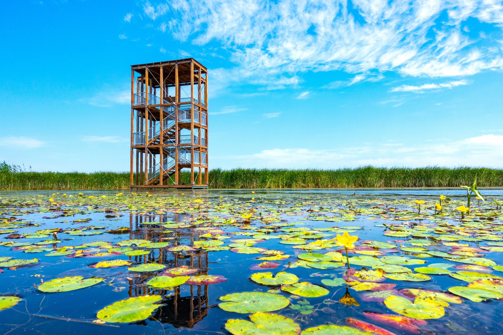
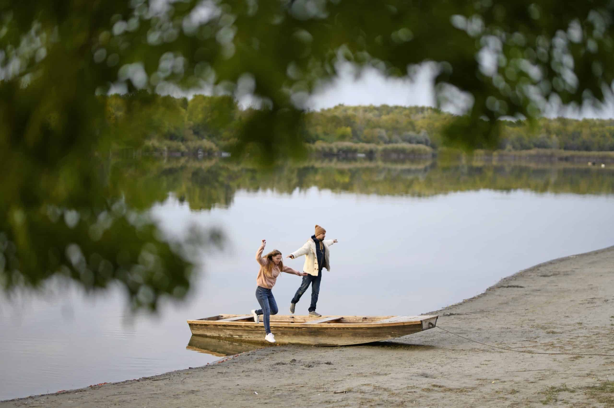

Balaton
A Balaton Közép-Európa legnagyobb édesvízi tava, és Magyarország egyik legnépszerűbb nyaralóhelye.
 Partján számos hangulatos város és falu található, például Siófok, Balatonfüred és Keszthely. A
nyári hónapokban sokan érkeznek ide, hogy fürdőzzenek, napozzanak vagy hajókázzanak a tavon. A
Balaton sekély vize gyorsan felmelegszik, ezért különösen kedvelt a családok körében. Az északi part
dombos, szőlőkkel borított, míg a déli part lapos és homokos strandokkal csábít. A tó környéke remek
lehetőséget kínál kerékpározásra, túrázásra és vitorlázásra is. Ősszel és tavasszal csendesebb, de
ilyenkor is gyönyörű a táj. Télen, amikor befagy a tó, korcsolyázni és sétálni is lehet a jégen, ami
igazán különleges élmény.
Partján számos hangulatos város és falu található, például Siófok, Balatonfüred és Keszthely. A
nyári hónapokban sokan érkeznek ide, hogy fürdőzzenek, napozzanak vagy hajókázzanak a tavon. A
Balaton sekély vize gyorsan felmelegszik, ezért különösen kedvelt a családok körében. Az északi part
dombos, szőlőkkel borított, míg a déli part lapos és homokos strandokkal csábít. A tó környéke remek
lehetőséget kínál kerékpározásra, túrázásra és vitorlázásra is. Ősszel és tavasszal csendesebb, de
ilyenkor is gyönyörű a táj. Télen, amikor befagy a tó, korcsolyázni és sétálni is lehet a jégen, ami
igazán különleges élmény.
Tisza-tó
A Tisza-tó Magyarország második legnagyobb tava, amely mesterségesen jött létre a Tisza folyó felduzzasztásával.  A tó különlegessége, hogy természeti szépsége mellett rendkívül gazdag növény- és állatvilággal rendelkezik. Itt található az egyik legváltozatosabb vízi élőhely hazánkban, ami miatt a természetkedvelők és madármegfigyelők is szívesen látogatják. A Tisza-tó környékén számos kerékpár- és túraútvonal várja a kirándulókat. A vízisportok kedvelői is megtalálják a számításukat, hiszen lehet kajakozni, csónakázni vagy horgászni. A tó mellett fekvő Poroszló és Tiszafüred népszerű üdülőhelyek. A Tisza-tavi Ökocentrumban sok érdekességet megtudhatunk a tó élővilágáról. A Tisza-tó nemcsak nyáron, hanem egész évben kiváló kikapcsolódási lehetőséget nyújt a természet és a víz.
Szelidi-tó
A Szelidi-tó a Duna közelében, Bács-Kiskun megyében található, és egyike Magyarország természetes eredetű tavai közül.  Sekély vize nyáron gyorsan felmelegszik, ezért különösen kedvelt fürdőzőhely a családok körében. A tó partján homokos strand és jól kiépített üdülőterület várja a pihenni vágyókat. A környék csendes, nyugodt hangulata ideális azok számára, akik szeretnének elvonulni a város zajától. A Szelidi-tó nemcsak fürdőzésre, hanem horgászatra is kiválóan alkalmas. A tó körüli tanösvény és természetvédelmi terület remek lehetőséget kínál sétákra és madármegfigyelésre. Nyáron gyakran tartanak rendezvényeket és kisebb fesztiválokat, így a szórakozásról sem kell lemondani. A Szelidi-tó egyszerre nyújt természetközeli élményt és kellemes kikapcsolódást minden korosztály számára.